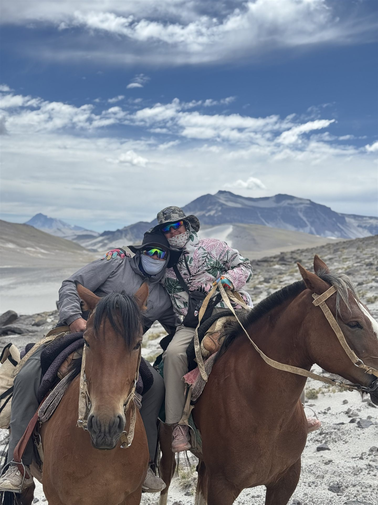
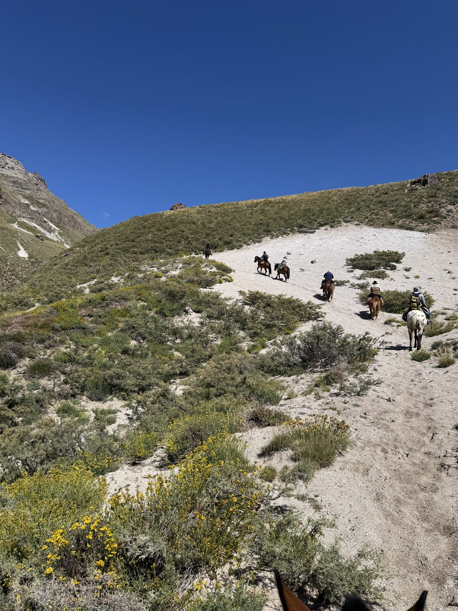
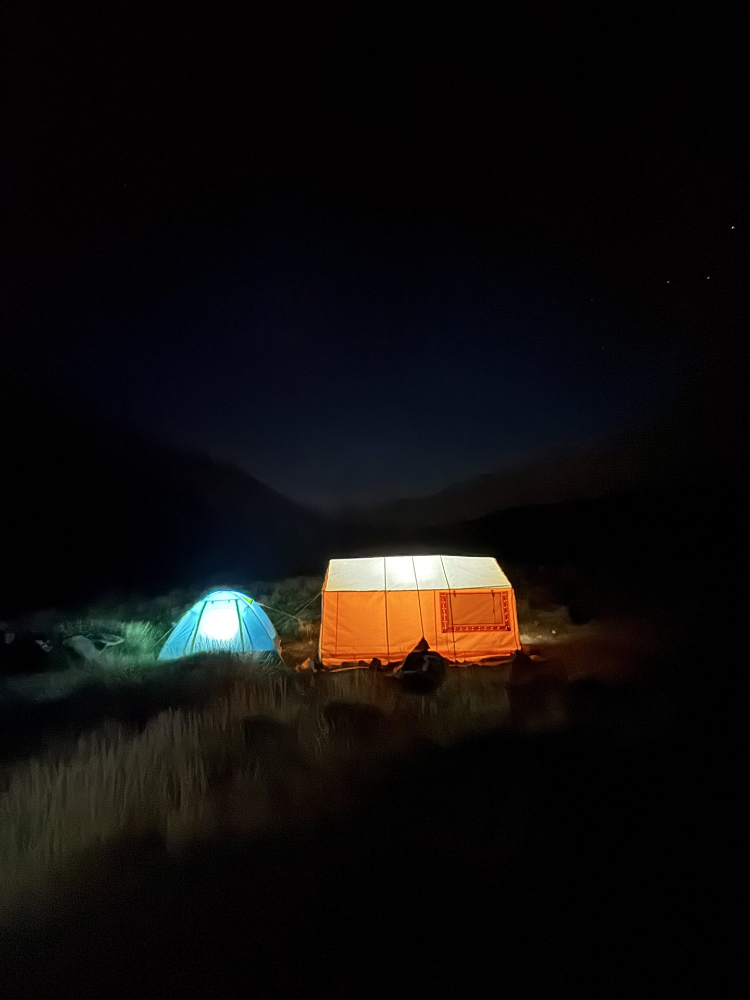
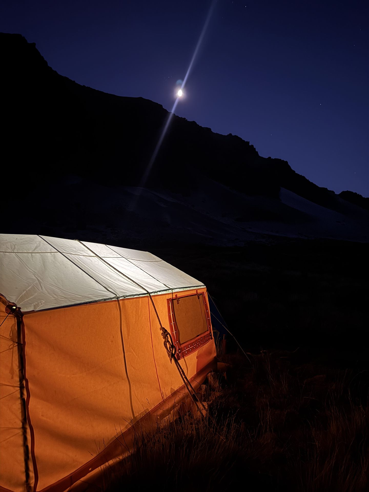
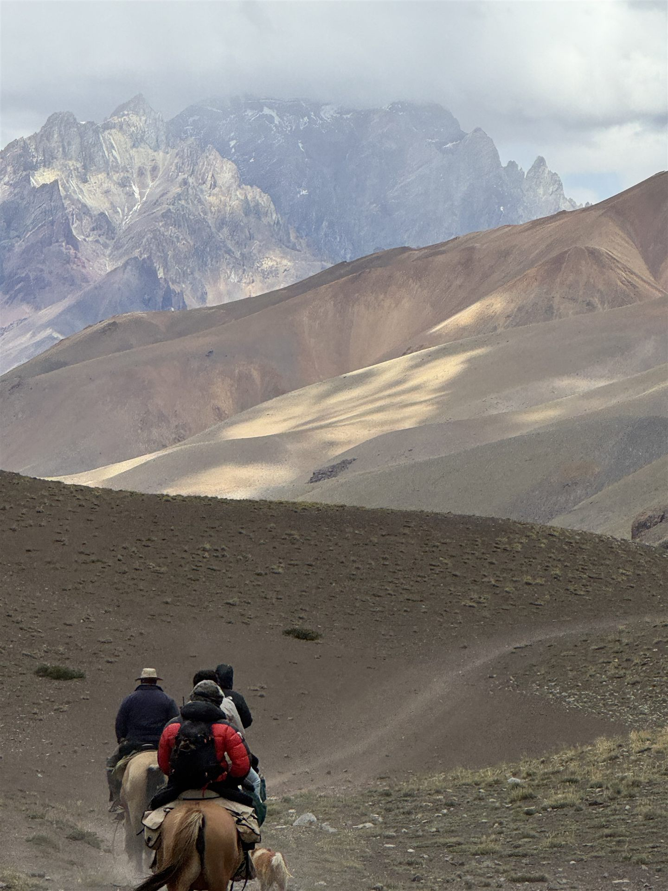
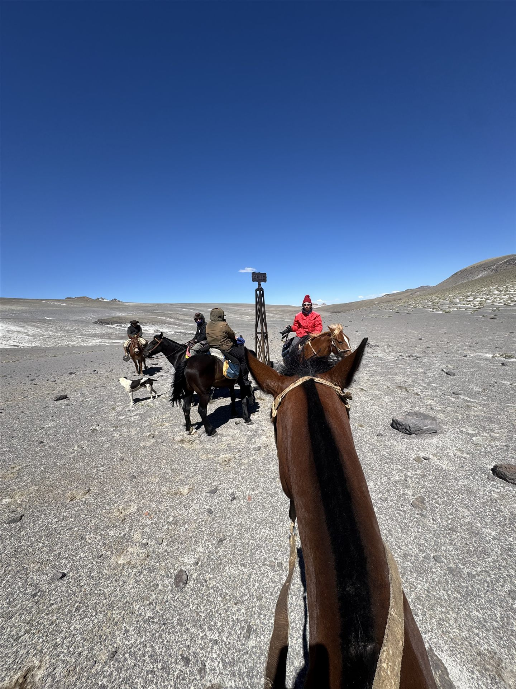
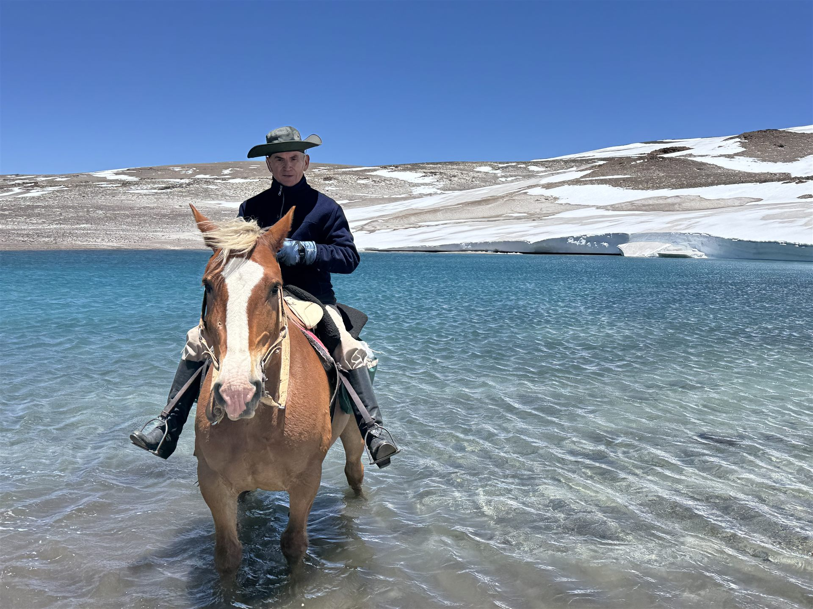
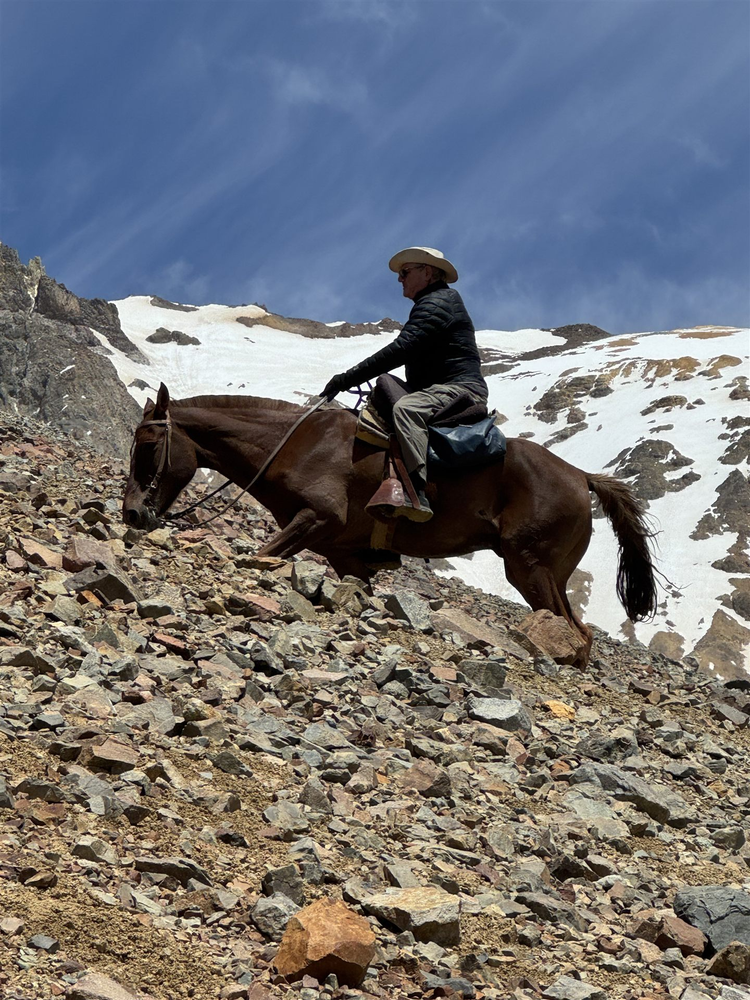

Cuatro días a pie o a caballo por la cordillera, desde El Sosneado hasta el límite internacional con Chile. Un recorrido de alta montaña entre valles de altura, glaciares y lagunas, con guías, campamento de montaña y logística completa. Operado por Senderos Cabalgatas y Trekking, prestadores de turismo aventura en San Rafael y Malargüe desde 1997.
El Cruce de los Andes lleva hasta el límite internacional entre Argentina y Chile, remontando la cordillera desde El Sosneado por senderos de alta montaña. En el camino se atraviesan valles de arena volcánica, morrenas y glaciares de roca, hasta llegar al hito fronterizo — el mismo tipo de paso que usaban arrieros y viajeros para cruzar la cordillera antes de que existieran los caminos actuales.
La salida es desde El Sosneado, sobre la Ruta Nacional 40, entre San Rafael y Malargüe, Mendoza, con noches de campamento de montaña en el trayecto de ida y vuelta.

Dos formas de hacer el cruce: caminando con equipo de guías, o a caballo con baqueanos. Ambas de 4 días y 3 noches, con pensión completa y campamento de montaña equipado.
4 días / 3 noches desde El Sosneado, Ruta 40, hasta el límite internacional con Chile.
4 días / 3 noches desde El Sosneado, Ruta 40, hasta el límite internacional con Chile.
Punto de encuentro en el Parador El Chacallal, Ruta Nacional 40 Km 3000, El Sosneado, San Rafael. Horarios aproximados, sujetos al clima de montaña.
Itinerario de referencia: los horarios y el trazado pueden ajustarse según el clima y las condiciones de la cordillera.
Por ser una travesía de 4 días, las salidas se coordinan por grupo y disponibilidad de guías y caballos. Cupos limitados.
Imágenes tomadas por nuestros propios grupos, en el Cruce de los Andes.

Cruzando las dunas de la precordillera
En la cordillera, camino al paso
Descenso por el valle de arena volcánica
Del lado chileno, tras cruzar la cordillera
Bajando junto a un glaciar de montaña
Vadeando una laguna de altura
Cabalgando por la cresta, rumbo al pasoEl punto de encuentro es el Parador El Chacallal, sobre la Ruta Nacional 40, entre San Rafael y Malargüe, Mendoza.
Punto de encuentro: Parador El Chacallal, Ruta Nacional 40, Km 3000, El Sosneado, San Rafael, Mendoza.
Base de las expediciones: en el Parador funciona la base de Senderos, donde se prepara y se acomoda la carga antes de cada salida.
Noche previa en cabañas: el Parador tiene cabañas propias — podés llegar un día antes y descansar ahí antes de arrancar la excursión.
Recorrido de ida y vuelta: el cruce llega hasta el límite con Chile y regresa por la misma cordillera hasta El Sosneado.
Cómo llegar en auto: por Ruta Nacional 40, a aproximadamente 2 horas de la ciudad de San Rafael y a un poco más de Malargüe.
Permiso de acceso: se gestiona el permiso de ingreso a la zona de frontera como parte de la logística de la excursión.
Ver Parador El Chacallal en Google MapsAdemás del Cruce de los Andes, operamos otras salidas de trekking y cabalgata en la cordillera de Mendoza.
Escribinos por WhatsApp para consultar disponibilidad, valores y planes de pago del trekking o la cabalgata Cruce de los Andes.